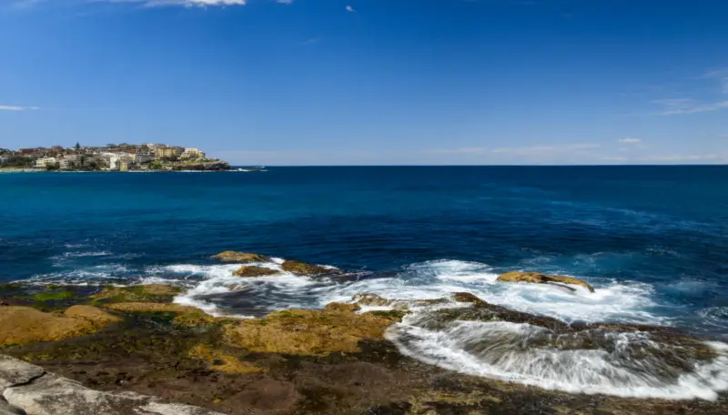
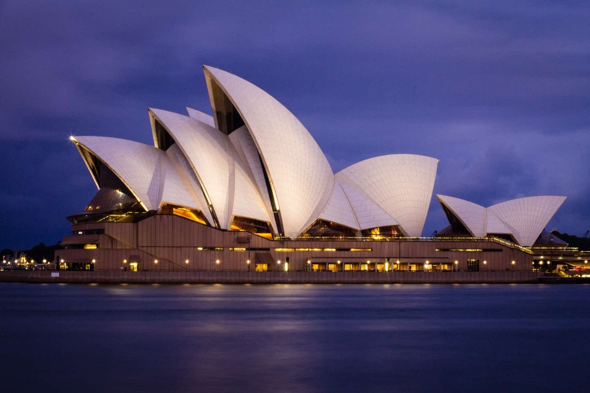
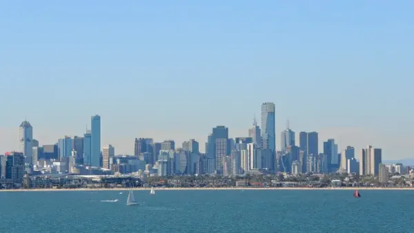

Localizado no Ponto Bennelong na Baía de Sydney, o Opera House é uma das mais famosas e distintas maravilhas arquitetônicas do século 20. Projetado e construído pelo arquiteto Dinamarquês Jørn Utzon, o Opera House com toda sua grandiosidade e geometria teve como inspiração a natureza, suas cores, funções e formas. Sempre visito o Opera House no fim da tarde tendo em vista o pôr do sol maravilhoso da Baía de Sydney que acaba ficando muito melhor quando acompanhado de coquetéis no Opera Bar. Lembre-se que é possível fazer um tour guiado dentro do Opera House, o que possibilita ver de perto a deslumbrante arquitetura interior do lugar. Os valores dos tours variam, começando em torno de $60 reais. Também vale adicionar ao roteiro o Royal Botanic Gardens, já que fica localizado bem juntinho ao Opera House. 
Assim como o Opera House, a Sydney Harbour Bridge é um dos maiores ícones de Sydney e é a maior (não é a mais longa) ponte de arco feita aço no mundo. Completada em 1932, a ponte atravessa a Baía de Sydney e contem mais de 6 milhões de rebites feitos a mão (A MÃO!!!). As lendas de sua construção fascinam Sydneysiders (locais de Sydney) e pessoas do mundo inteiro. A ponte pode ser apreciada e explorada de varias formas. Um dos mais populares passeios é a BridgeClimb Sydney que permite ao visitante escalar a ponte ate o topo através de suas escadas laterais, o passeio fica entre $350 e $800 reais dependendo do dia e hora da escalada. Uma opção mais em conta é ver a ponte da Baía de Sydney perto do Opera House e atravessar a ponte a pé.
A famosa trilha (ou caminhada) de Bondi para Coogee estende-se por 6 quilômetros ao longo da costa rochosa dos subúrbios ao leste de Sydney, com vista praticamente ininterrupta ao Oceano Pacífico. A trilha é dividida em 6 partes, cada uma com vistas espetaculares e praias maravilhosas. Além das praias, a trilha também passa por varias piscinas naturais, parques, cafés e restaurantes. A trilha pode ser acessada através de Bondi ou Coogee, então porque não começar em Coogee e deixar a melhor praia por ultimo? Recomendo levar um boné, água, vestir roupas e calcados confortais e passar bastante protetor solar.
Victoria Melbour margin: 20px auto;ne é a capital do estado de Victoria e é a segunda cidade mais populosa da Austrália. A cidade que foi, pelo sexto ano consecutivo, eleita a melhor do mundo para se viver é conhecida pelo seu vasto e diverso comercio assim como seus restaurantes, bares e ótima vidas noturna. Coloque os seus sapatos mais confortáveis e aproveite o dia explorando as famosas Laneways da cidade começando na Flinders Station, passando pela Degraves rumo a Little Bourke Street. A melhor forma de acessar Melbourne é de avião, já que o centro da cidade fica a mais ou menos 30 minutos do aeroporto.
O passaporte é um documento obrigatório para poder viajar para outro país, tendo a função de te identificar quando estiver fora do país. Nele vão ser informados os seus vistos, autorizações,voos, e outras informações.
Sim, Brasileiros precisam de visto e o processo para a obtenção do mesmo, dependendo do tipo de visto, pode ser longo e cheio de picuinhas. Para saber mais visite o site da Embaixada da Austrália no Brasil.
Os principais vistos para austrália são o de Turismo e Estudo:
Arranjar emprego não é fácil, e a Austrália não é uma exceção, a maioria dos migrantes vindos de outros países começam suas carreiras de trabalho na Austrália trabalhando em locais como restaurantes e obras.
É sempre recomendável aprender inglês antes de ir para lá, porém nem todos fazem isso. Pessoas com nível de inglês básico é recomendado começarem em trabalhos que não exigem conversas complexas, como a limpeza em obras.
Para pessoas com nível intermediário de Inglês, pode trabalhar de Lavador de louça ou Barista em cafeterias e restaurantes em cidades menores, que precisem de funcionários.
O salário mínimo na Austrália é considerado um dos mais altos do mundo e, por consequência, a qualidade de vida no país é excelente.
O salário mínimo na Austrália é de 19,84 dólares australianos por hora, quase seis vezes mais que no Brasil. E por mais que o salário seja maior, a quantidade de horas que é trabalhada na Austrália é bem menor que no Brasil, podendo chegar até 38 horas semanais, na maioria das vezes.